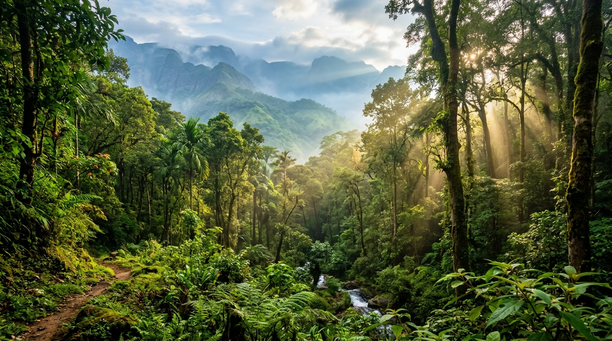
தமிழ்நாடு பல்வேறு மலைத்தொடர்கள், சமவெளிகள், கடற்கரைப் பகுதிகள் மற்றும் இயற்கை வளங்களைக் கொண்ட மாநிலமாகும். மேற்கு தொடர்ச்சி மலைகளின் அடர்ந்த காடுகள் முதல் கடற்கரையோரச் சதுப்புநிலக் காடுகள் வரை, தமிழ்நாட்டின் காடுகள் உயிரினப் பன்மை மற்றும் நீர்வளப் பாதுகாப்பிற்கு மிக முக்கியமானவை.
தமிழ்நாட்டின் மொத்த பசுமைப் பரப்பு சுமார் 31,821 சதுர கிலோமீட்டர் ஆகும் (24.47%). இதில் 5 தேசியப் பூங்காக்கள், 5 புலிகள் காப்பகங்கள், 18 வனவிலங்கு சரணாலயங்கள் மற்றும் 18 பறவைகள் சரணாலயங்கள் உள்ளன. தமிழ்நாட்டில் இந்தியாவின் 16 முக்கிய வன வகைக் குழுக்களில் 9 வகைக் குழுக்கள் காணப்படுகின்றன.
குறிப்பு: இங்கு குறிப்பிடப்படும் 15 பகுதிகள், இந்தப் பக்கத்தில் விரிவாகக் குறிப்பிடப்படும் முக்கியமான காடுகள் மற்றும் வனப்பகுதிகளின் பட்டியல் மட்டுமே. இது தமிழ்நாட்டில் உள்ள அனைத்து காடுகளின் மொத்த எண்ணிக்கை அல்ல.
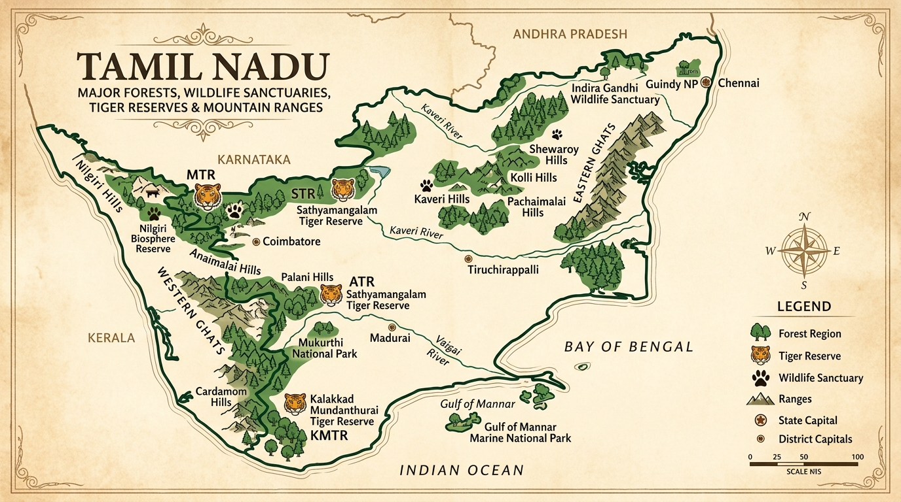
உயரமான மலைப்பகுதிகளில் காணப்படும் சிறிய பசுமையான அடர்ந்த காடுகள். நீலகிரி, கொடைக்கானல், ஆனைமலை மற்றும் மேற்கு தொடர்ச்சி மலைகளில் காணப்படுகின்றன. பல அரிய தாவரங்கள் மற்றும் நீர்வளப் பாதுகாப்பிற்கு முக்கியமானது.
அதிக மழைப்பொழிவு பெறும் மேற்கு தொடர்ச்சி மலைப் பகுதிகளில் ஆண்டு முழுவதும் பசுமையாகக் காணப்படும் அடர்ந்த காடுகள். திருநெல்வேலி, கன்னியாகுமரி, கோயம்புத்தூர் மாவட்டங்களில் காணப்படுகின்றன.
ஈரப்பதமான மற்றும் வறண்ட காலநிலைகளுக்கு ஏற்ப வளரும் காடுகள். சத்தியமங்கலம், தருமபுரி மற்றும் உள்நாட்டு மலைப்பகுதிகளில் யானைகள், புலிகள் மற்றும் வனவிலங்குகளின் முக்கிய வாழிடமாக உள்ளன.
கடல் அலைகள் மற்றும் உப்புநீருக்கு ஏற்ப வளரக்கூடிய சிறப்பு காடுகள். பிச்சாவரம், முத்துப்பேட்டை கடற்கரைப் பகுதிகளில் சுமார் 9,039 ஹெக்டேர் பரப்பில் அமைந்து கடற்கரை பேரிடர்களின் தாக்கத்தைக் குறைக்கின்றன.
மழைநீரைச் சேகரித்து மண்ணுக்குள் ஊடுருவ உதவுகின்றன. நிலத்தடி நீர் மற்றும் நீர்ப்பிடிப்பு பகுதிகளைப் பாதுகாத்து பல முக்கிய ஆறுகளுக்கு நீர்வளம் வழங்குகின்றன.
பல்வேறு மரங்கள், செடிகள், கொடிகள் மற்றும் பிற தாவரங்களுக்கு இயற்கையான வாழிடமாக அமைந்து இயற்கைச் சூழலின் சமநிலையைப் பாதுகாக்கின்றன.
யானைகள், புலிகள், சிறுத்தைகள், மான்கள், காட்டு மாடுகள், கரடிகள் மற்றும் பல்வேறு பறவைகள் உள்ளிட்ட உயிரினங்களுக்கு காடுகள் வாழிடமாக உள்ளன.
மரங்கள் வளிமண்டல கார்பன் டை ஆக்சைடை உறிஞ்சுவதன் மூலம் கார்பன் உறிஞ்சும் அமைப்பாக செயல்பட்டு காலநிலை மாற்றத்தின் தாக்கத்தைக் குறைக்கின்றன.
மரங்கள் மற்றும் தாவரங்களின் வேர்கள் மண்ணை உறுதியாகப் பிடித்துக் கொள்வதால் மழை மற்றும் நீரோட்டத்தால் ஏற்படும் மண் அரிப்பு குறைகிறது.
அலையாத்திக் காடுகள் கடற்கரைப் பகுதிகளை புயல், கடல் அலை மற்றும் சுனாமி போன்ற இயற்கைப் பேரிடர்களின் தாக்கத்திலிருந்து பாதுகாக்கின்றன.
முதுமலை, ஆனைமலை, நீலகிரி, கொடைக்கானல் மற்றும் பிச்சாவரம் போன்ற பகுதிகள் இயற்கைச் சுற்றுலாவை வளர்க்கின்றன.
சுற்றுலா, இயற்கை வழிகாட்டுதல் மற்றும் வன வளங்கள் சார்ந்த செயல்பாடுகள் மூலம் உள்ளூர் மக்களுக்கு வாழ்வாதார வாய்ப்புகள் உருவாகின்றன.
முதுமலை தமிழ்நாட்டின் மிகவும் முக்கியமான வனப்பகுதிகளில் ஒன்றாகும். இது மேற்கு தொடர்ச்சி மலைகளின் வளமான உயிரினப் பன்மைப் பகுதியில் அமைந்துள்ளது. இப்பகுதியில் யானைகள், புலிகள், மான்கள், காட்டு மாடுகள் மற்றும் பல்வேறு பறவைகள் காணப்படுகின்றன.
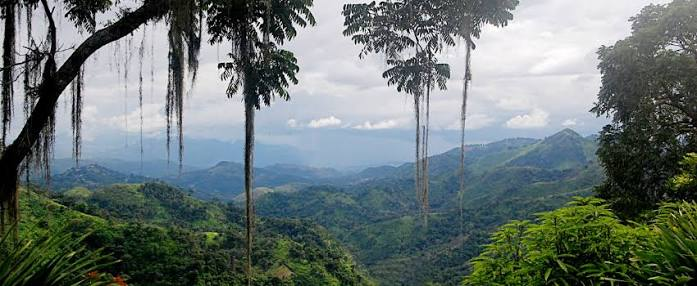
சத்தியமங்கலம் காடுகள் தமிழ்நாட்டின் மிகப்பெரிய மற்றும் முக்கியமான வனப்பகுதிகளில் ஒன்றாகும். இப்பகுதி மேற்கு தொடர்ச்சி மலைகளுக்கும் கிழக்குத் தொடர்ச்சி மலைகளுக்கும் இடையிலான முக்கியமான இயற்கை இணைப்புப் பகுதியாக விளங்குகிறது. புலிகள், யானைகள் மற்றும் பல்வேறு வனவிலங்குகளின் முக்கிய வாழிடம்.
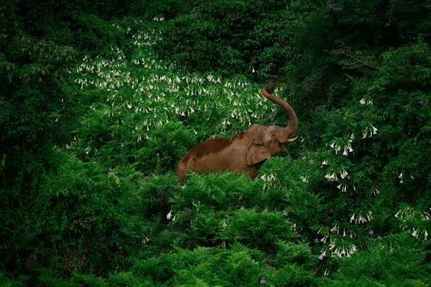
ஆனைமலை காடுகள் மேற்கு தொடர்ச்சி மலைகளின் முக்கியமான வனப்பகுதிகளில் ஒன்றாகும். அடர்ந்த காடுகள், மலைகள் மற்றும் பல்வேறு உயிரினங்கள் இப்பகுதியின் முக்கிய இயற்கைச் சிறப்புகளாகும். யானைகள், புலிகள், சிறுத்தைகள் மற்றும் பல்வேறு உயிரினங்கள் வாழும் பகுதி.
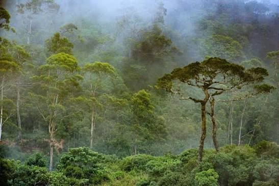
களக்காடு–முண்டந்துறை பகுதி தென் தமிழ்நாட்டின் மிக முக்கியமான வனப்பகுதிகளில் ஒன்றாகும். அடர்ந்த மலைக்காடுகள், பல்வேறு தாவரங்கள் மற்றும் அரிய வனவிலங்குகள் இப்பகுதியில் காணப்படுகின்றன. நீர்வளம், வனவிலங்கு பாதுகாப்பு மற்றும் சுற்றுச்சூழல் சமநிலைக்கு முக்கியமானது.
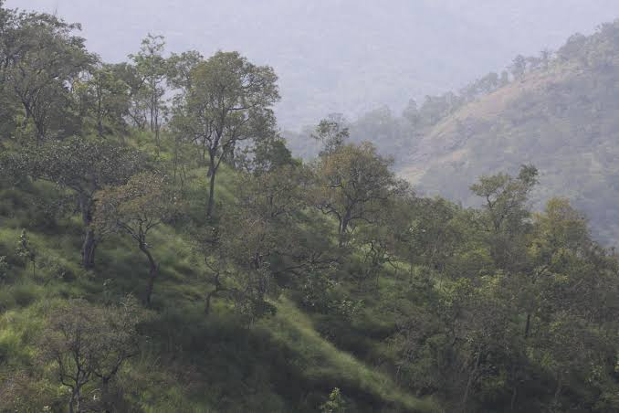
மேகமலை பசுமையான மலைகள், அடர்ந்த காடுகள் மற்றும் நீரோடைகளுக்காக புகழ்பெற்றது. மேற்கு தொடர்ச்சி மலைகளின் முக்கியமான இயற்கை மற்றும் உயிரினப் பன்மைப் பகுதிகளில் இதுவும் ஒன்றாகும். மலை, காடு, மேகங்கள் மற்றும் நீர்வள அமைப்பு இணைந்த இயற்கைச் சூழல்.
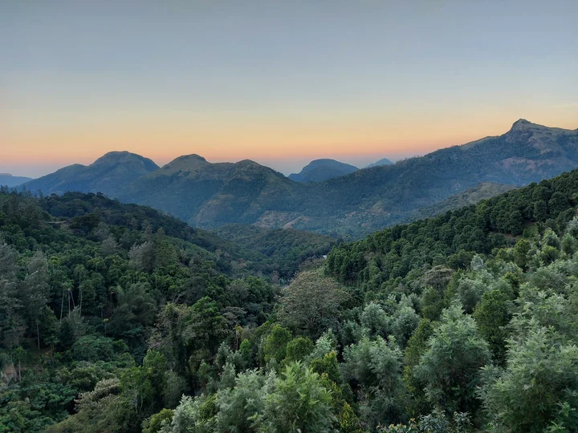
கன்னியாகுமரி மாவட்டத்தின் மலைப்பகுதிகளில் அதிக மழைப்பொழிவு பெறும் பசுமையான காடுகள் காணப்படுகின்றன. இப்பகுதி பல்வேறு தாவரங்கள் மற்றும் விலங்குகளுக்கான முக்கிய வாழிடமாக உள்ளது. நீர்வளம், உயிரினப் பன்மை மற்றும் சுற்றுச்சூழல் பாதுகாப்பிற்கு முக்கியமானது.
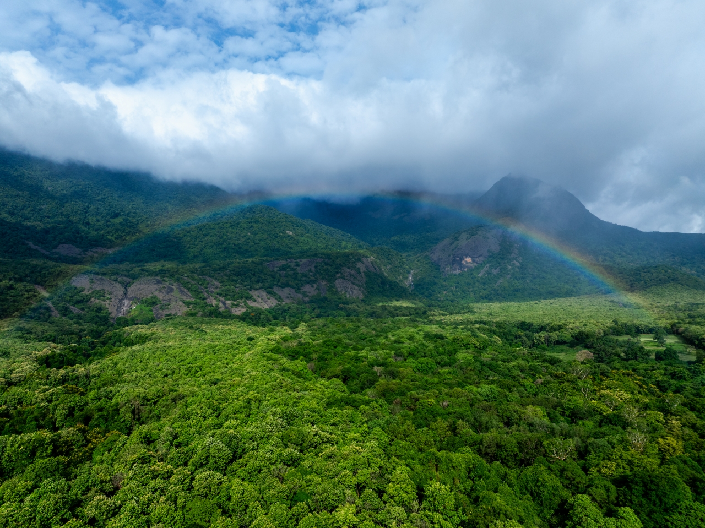
சிறுவாணி பகுதி அடர்ந்த காடுகள் மற்றும் முக்கியமான நீர்வளத்திற்காக அறியப்படுகிறது. மலைக்காடுகளில் பெய்யும் மழைநீர் மற்றும் நீரோடைகள் இப்பகுதியின் நீர்வள அமைப்பிற்கு பங்களிக்கின்றன. அடர்ந்த காடு மற்றும் நீர்வளத்துடன் கூடிய மலைப்பகுதி.
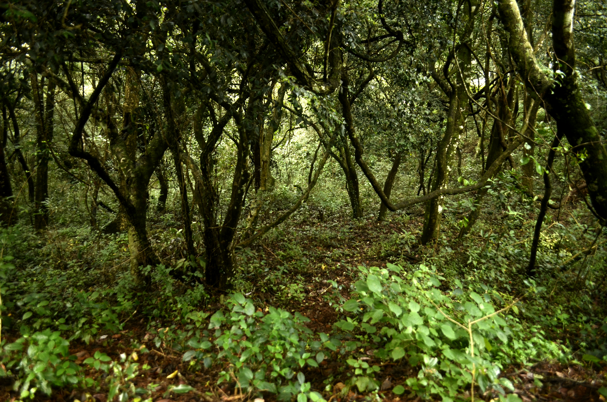
கொல்லிமலை காடுகள் கிழக்குத் தொடர்ச்சி மலைகளின் முக்கியமான பசுமைப் பகுதிகளில் ஒன்றாகும். மலைப்பகுதி, காடுகள், நீரோடைகள் மற்றும் பல்வேறு தாவரங்கள் இப்பகுதியின் இயற்கைச் சிறப்புகளாகும். உயிரினப் பன்மை, நீர்வளம் மற்றும் மலைச் சுற்றுலாவிற்கு முக்கியமானது.
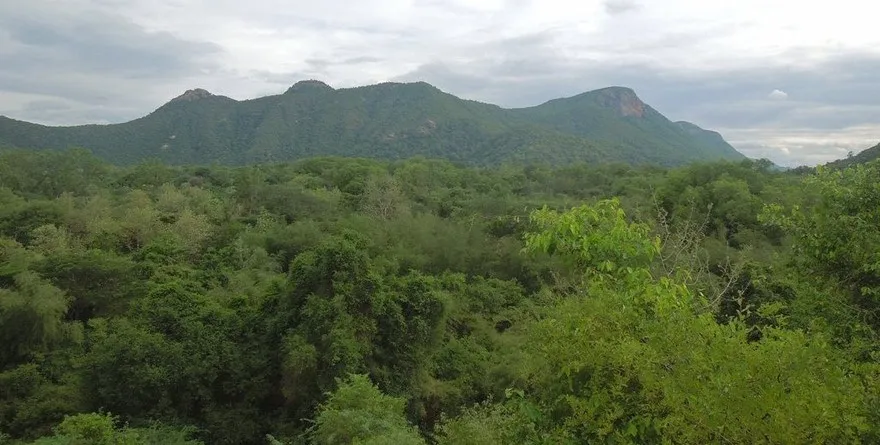
ஜவ்வாது மலைப்பகுதியில் காணப்படும் காடுகள் கிழக்குத் தொடர்ச்சி மலைகளின் முக்கியமான இயற்கை வளங்களில் ஒன்றாகும். இப்பகுதியில் பல்வேறு மரங்கள், தாவரங்கள் மற்றும் வன உயிரினங்கள் காணப்படுகின்றன. மண் பாதுகாப்பு, நீர்வளம் மற்றும் உள்ளூர் இயற்கைச் சூழலுக்கு முக்கியமானது.
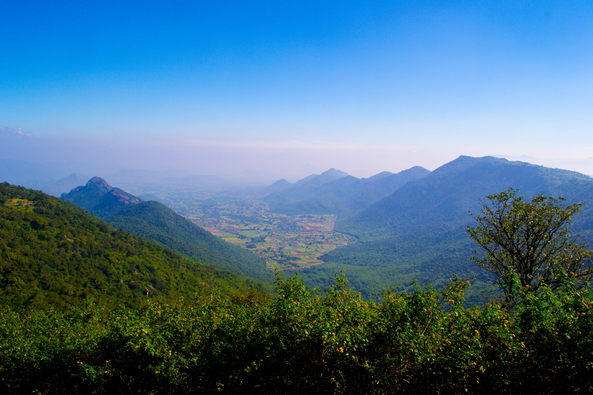
ஏற்காடு மலைப்பகுதி கிழக்குத் தொடர்ச்சி மலைகளில் அமைந்துள்ள முக்கியமான பசுமைப் பகுதியாகும். மலைக்காடுகள், பல்வேறு மரங்கள் மற்றும் இயற்கையான மலைச்சூழல் இப்பகுதியின் சிறப்புகளாகும். இயற்கை வளப் பாதுகாப்பு மற்றும் சுற்றுலா வளர்ச்சிக்கு முக்கியமானது.
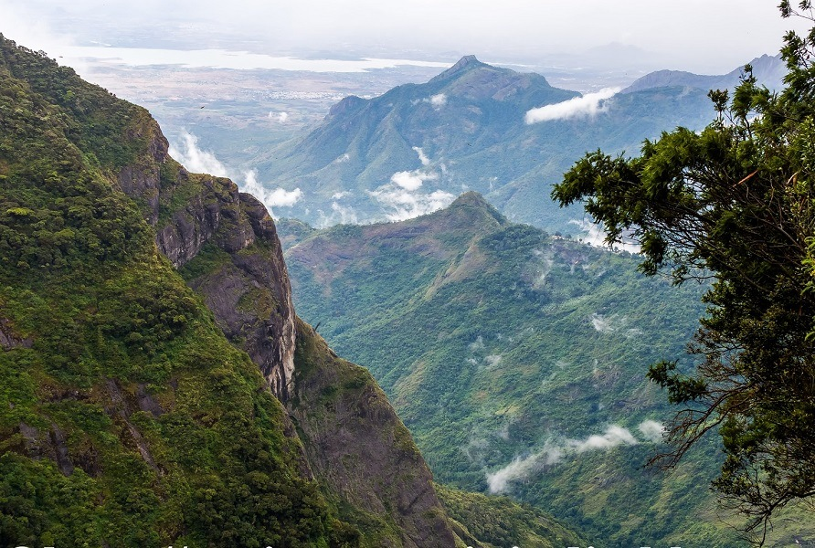
கொடைக்கானல் மலைப்பகுதியில் சோலைக் காடுகள் மற்றும் மலைப் புல்வெளிகள் காணப்படுகின்றன. இக்காடுகள் மலைப்பகுதியின் நீர்வளத்தையும் பல்வேறு தாவர மற்றும் விலங்கு இனங்களையும் பாதுகாக்க உதவுகின்றன. சோலைக் காடுகள் மற்றும் புல்வெளிகள் இணைந்த உயரமான மலைச் சூழல்.
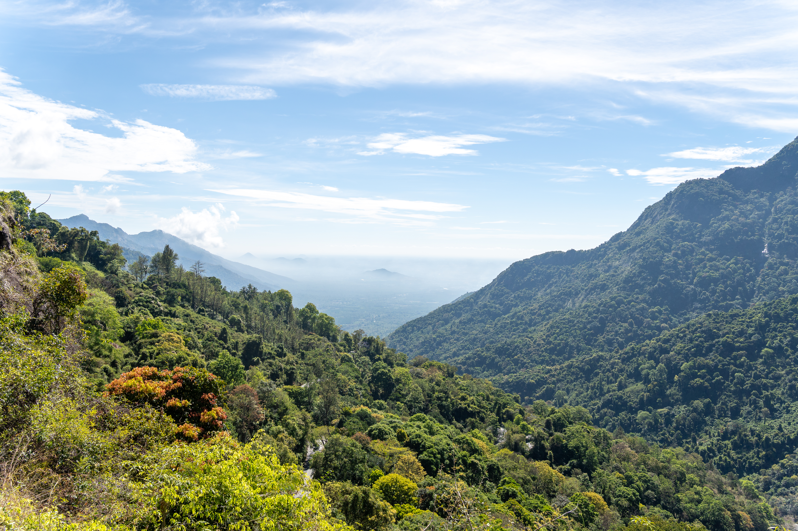
நீலகிரி மலைப்பகுதி தமிழ்நாட்டின் முக்கியமான உயரமான மலை வனப்பகுதிகளில் ஒன்றாகும். இங்கு சோலைக் காடுகள், புல்வெளிகள் மற்றும் பல்வேறு அரிய தாவரங்கள் மற்றும் விலங்குகள் காணப்படுகின்றன. நீர்வளப் பாதுகாப்பு, உயிரினப் பன்மை மற்றும் வனவிலங்கு பாதுகாப்பிற்கு முக்கியமானது.
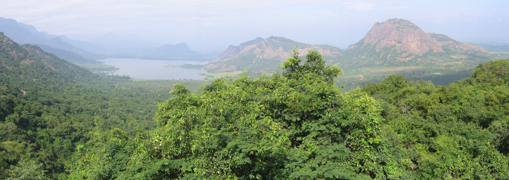
பழனி மலைத்தொடரில் பல்வேறு வகையான மலைக்காடுகள் காணப்படுகின்றன. இக்காடுகள் மலைப்பகுதிகளின் இயற்கைச் சூழலையும் நீர்ப்பிடிப்பு பகுதிகளையும் பாதுகாக்க உதவுகின்றன. மலைக்காடுகள் மற்றும் நீர்ப்பிடிப்பு பகுதிகள்.
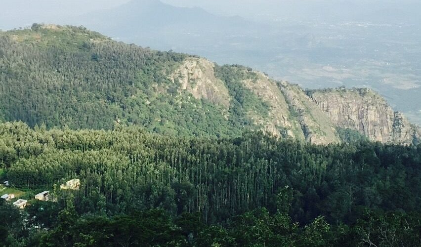
சேவராயன் மலைப்பகுதி கிழக்குத் தொடர்ச்சி மலைகளின் முக்கியமான மலைச்சூழல்களில் ஒன்றாகும். இப்பகுதியில் பல்வேறு தாவரங்கள், மரங்கள் மற்றும் மலைப்பகுதி உயிரினங்கள் காணப்படுகின்றன. இயற்கை வளப் பாதுகாப்பு மற்றும் மலைச் சுற்றுலாவிற்கு முக்கியமானது.
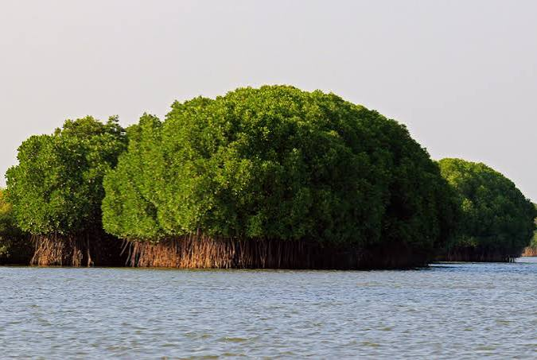
பிச்சாவரம் தமிழ்நாட்டின் மிகவும் முக்கியமான அலையாத்திக் காடுகளில் ஒன்றாகும். கடல் நீர் மற்றும் நன்னீர் கலக்கும் கடற்கரைச் சூழலில் வளரக்கூடிய தனித்துவமான மரங்கள் மற்றும் தாவரங்கள் இங்கு காணப்படுகின்றன. கால்வாய்கள் மற்றும் நீர்வழிகளால் சூழப்பட்ட அலையாத்திக் காடு.
| எண் | காடு / வனப்பகுதி | மாவட்டம் | முக்கியத்துவம் |
|---|---|---|---|
| 1 | முதுமலை | நீலகிரி | புலிகள் மற்றும் யானைகள் வாழிடம் |
| 2 | சத்தியமங்கலம் | ஈரோடு | முக்கிய உயிரினப் பன்மை மற்றும் வனவிலங்கு வாழிடம் |
| 3 | ஆனைமலை | கோயம்புத்தூர் / திருப்பூர் | புலிகள் மற்றும் யானைகள் வாழிடம் |
| 4 | களக்காடு–முண்டந்துறை | திருநெல்வேலி / தென்காசி | உயிரினப் பன்மை மற்றும் நீர்வளம் |
| 5 | மேகமலை | தேனி | பசுமையான மலைக்காடு மற்றும் வனவிலங்குகள் |
| 6 | கன்னியாகுமரி காடுகள் | கன்னியாகுமரி | அதிக மழைப்பொழிவு மற்றும் பசுமைமாறா காடுகள் |
| 7 | சிறுவாணி | கோயம்புத்தூர் | காடு மற்றும் நீர்வளம் |
| 8 | கொல்லிமலை | நாமக்கல் | கிழக்குத் தொடர்ச்சி மலைக்காடு |
| 9 | ஜவ்வாது மலை | திருப்பத்தூர் / வேலூர் பகுதிகள் | மலைக்காடு மற்றும் இயற்கை வளம் |
| 10 | ஏற்காடு மலைக்காடுகள் | சேலம் | மலைக்காடு மற்றும் சுற்றுலா |
| 11 | கொடைக்கானல் மலைக்காடுகள் | திண்டுக்கல் | சோலைக் காடுகள் மற்றும் நீர்வளம் |
| 12 | நீலகிரி மலைக்காடுகள் | நீலகிரி | சோலைக் காடுகள் மற்றும் உயிரினப் பன்மை |
| 13 | பழனி மலைக்காடுகள் | திண்டுக்கல் / தேனி | நீர்ப்பிடிப்பு மற்றும் மலைச் சூழல் |
| 14 | சேவராயன் மலைக்காடுகள் | சேலம் | கிழக்குத் தொடர்ச்சி மலைச் சூழல் |
| 15 | பிச்சாவரம் அலையாத்திக் காடுகள் | கடலூர் | கடற்கரை பாதுகாப்பு மற்றும் அலையாத்தி சூழல் |
“மழையைச் சேமித்து, ஆறுகளுக்கு உயிரூட்டி, உயிரினங்களைப் பாதுகாத்து, காலநிலையைச் சமநிலைப்படுத்தி, தமிழ்நாட்டின் இயற்கை வளத்தை நிலைநிறுத்துவது — அதன் காடுகள்.”